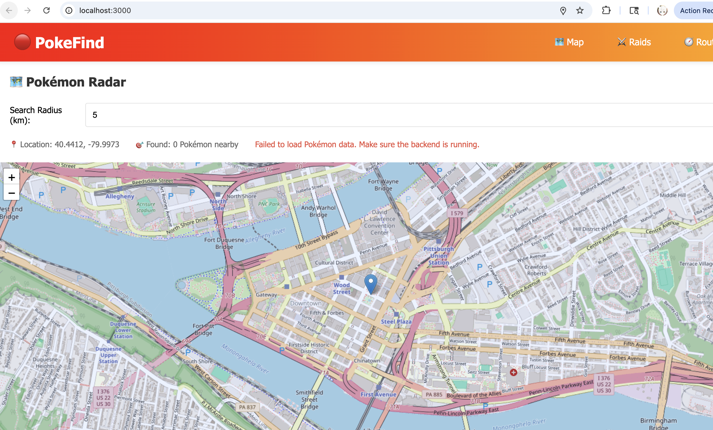
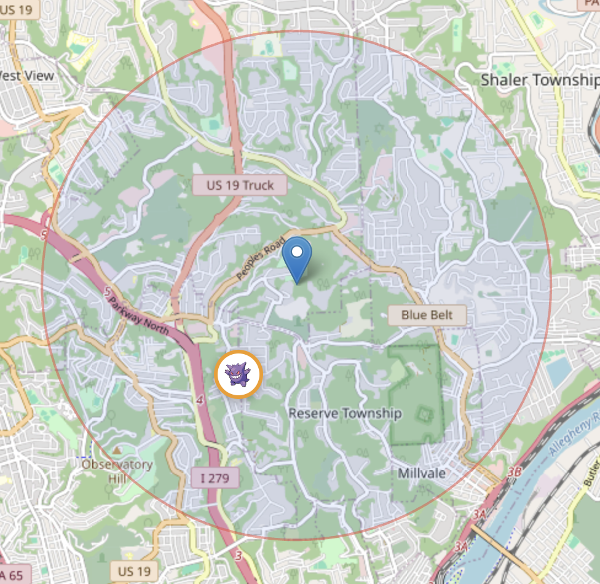
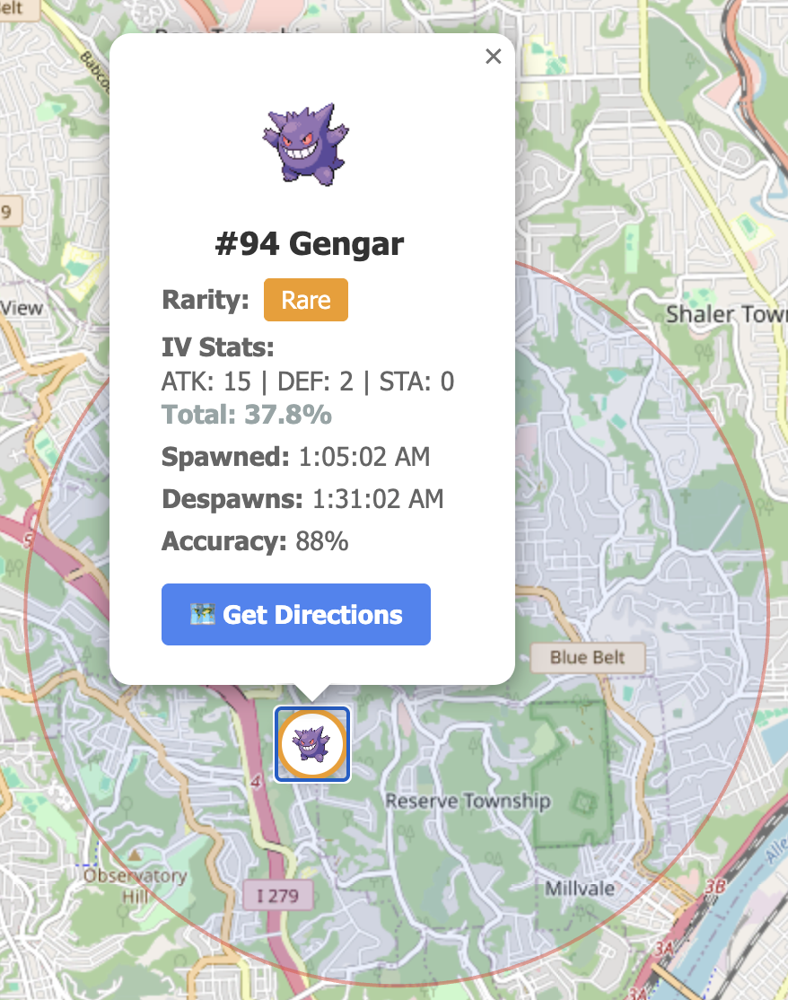
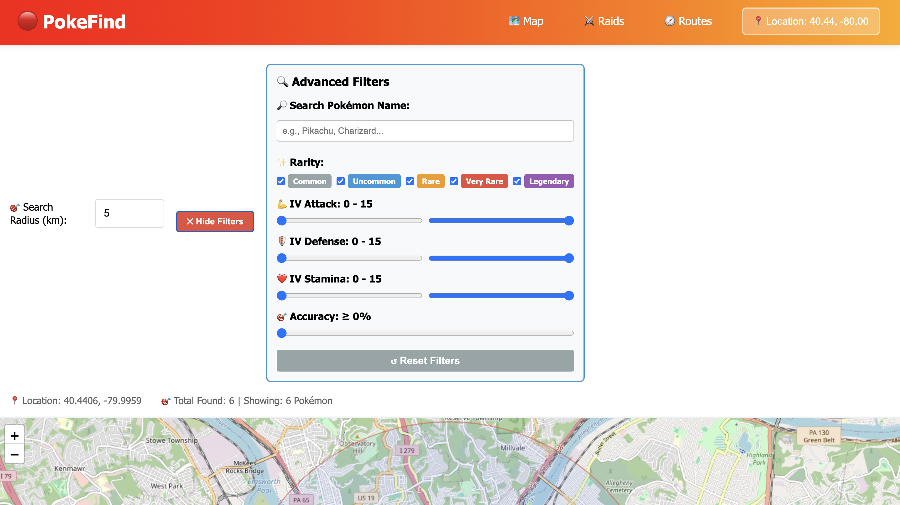

🚀 Getting Started
Accessing the App
- Open your web browser
- Navigate to the PokeFind app
- The app will load with the Pokémon Radar as the default view

Main Interface
Navigation Bar
At the top of the screen, you'll find:
- 🗺️ Map - View nearby Pokémon spawns
- ⚔️ Raids - Find active raid battles
- 🧭 Routes - Plan your Pokémon hunting routes
- 📍 Location Button - Change your search location (top right corner)
🎯 Main Features
1. Pokémon Radar (Map View)
The Map view shows all Pokémon spawns within your selected radius.
What you'll see:
- 🔵 Blue marker - Your current location
- 🎨 Colored circles - Pokémon spawns (color indicates rarity)
- ⭕ Large circle - Your search radius area

Pokemon Map View
Rarity Colors
2. Search Radius Control
Located at the top of the map:
- Default: 5 kilometers
- Range: 1-20 km
- How to adjust:
- Click on the number input field
- Type your desired radius value
- Press Enter or click outside the field
- The map will automatically update with new Pokémon
The radius persists - When you search a new location, your radius setting is maintained!
3. Location Information
Below the radius control, you'll see:
This shows:
- Your current latitude and longitude
- Number of Pokémon spawns detected in your radius
📍 Finding Your Location
Method 1: Search by Address
- Click the 📍 Location button in the top-right corner of the navbar
- The Location Search modal will appear

Location Search Modal
- Under "Search by Address", enter any location:
- City name:
Pittsburgh, PA - Full address:
Times Square, New York - Landmark:
Eiffel Tower, Paris
- City name:
- Click the 🔍 Search button
- The map will automatically center on your searched location
Method 2: Enter Coordinates
If you have exact GPS coordinates:
- Open the Location Search modal
- Scroll to "Or Enter Coordinates" section
- Enter:
- Latitude: Between -90 and 90 (e.g., 40.5000)
- Longitude: Between -180 and 180 (e.g., -79.9959)
- Click 🔍 Search
🔍 Searching for Pokémon
Viewing Pokémon Details
- Click on any Pokémon marker (colored circle with Pokémon sprite)
- A popup will display detailed information:

Pokemon Details Popup - Gengar
Information Shown
- Pokémon Sprite - The actual Pokémon image
- #Number & Name - Pokédex ID and species name
- Rarity Badge - Color-coded rarity level
- IV Stats - Individual Values for Attack, Defense, and Stamina
- Shows as values (e.g.,
ATK: 15 | DEF: 2 | STA: 0) - Total: XX.X% - Overall IV quality
- Shows as values (e.g.,
- Spawned - When the Pokémon appeared
- Despawns - When it will disappear
- Accuracy - Reliability of the spawn data (88%-100%)
- 🗺️ Get Directions - Opens Google Maps for navigation
Example Reading
This Gengar:
- Is a Rare spawn with an orange border
- Has max Attack (15) but low Defense and Stamina
- Will be available for ~26 minutes
- Location data is 88% accurate
🔎 Filtering Pokémon & Raids
PokeFind includes powerful filtering options to help you find exactly what you're looking for!
Filter Panel
Click the Show Filters button at the top of the Map or Raids view to reveal the filter panel.

Filter Panel
Map View Filters
Available Filters:
- 🔤 Name Search - Type a Pokémon name to filter (e.g., "Pikachu", "Charizard")
- 🎨 Rarity Levels - Toggle checkboxes to show/hide:
- Common (Gray)
- Uncommon (Blue)
- Rare (Orange)
- Very Rare (Red)
- Legendary (Purple)
- ⚔️ IV Stats - Set minimum and maximum values for:
- Attack (0-15)
- Defense (0-15)
- Stamina (0-15)
- 🎯 Accuracy - Set minimum accuracy percentage (0-100%)
How it works:
- Click Show Filters to expand the filter panel
- Adjust any combination of filters
- The map updates in real-time showing only matching Pokémon
- The counter shows "Total Found: X | Showing: Y Pokémon"
- Click Reset Filters to clear all filters and show everything
Example Use Cases:
- Find all Legendary Pokémon: Uncheck all rarities except "Legendary"
- High IV hunting: Set Attack, Defense, and Stamina all to 10-15
- Specific species: Search "Dragonite" in the name field
- Reliable spawns only: Set Accuracy minimum to 95%
Raids View Filters
Available Filters:
- 🔤 Boss Search - Search by Raid Boss name
- 🏆 Raid Levels - Toggle levels 1-5
- 👥 Minimum Participants - Filter by number of trainers (0-20)
- ⏱️ Time Remaining - Set minimum time remaining in minutes (0-60)
How it works: Same as Map filters - adjust settings and see real-time results. Perfect for finding specific raid bosses or filtering by difficulty level!
Routes View Filters
- 🔤 Route Search - Filter your saved routes by name
- Filters persist while you browse - change locations without losing your filter settings
- Combine multiple filters for precise results (e.g., "Legendary + 95% accuracy + ATK 15")
- Use the Hide Filters button to get more map space while keeping filters active
⚔️ Viewing Raid Battles
Switching to Raids View
- Click ⚔️ Raids in the navigation bar
- The map will reload showing raid battle locations
Raid Levels (indicated by marker color)
- 🔘 Gray - Level 1 Raid (Easiest)
- 🔵 Blue - Level 2 Raid
- 🟠 Orange - Level 3 Raid
- 🔴 Red - Level 4 Raid
- 🟣 Purple - Level 5 Raid (Legendary)
Raid Details
Click on any raid marker to see:
- Gym Name - Where the raid is happening
- Boss Pokémon - Which Pokémon you'll battle
- Raid Level - Difficulty tier (1-5)
- Time Remaining - How long until the raid expires
- CP Range - Combat Power range of the boss
- Coordinates - Exact latitude/longitude
💡 Tips & Tricks
Maximizing Your Hunt
- Start with a larger radius (10-15km) to survey the area
- Narrow down to 3-5km for targets you want to reach
- Check Despawn times - Prioritize Pokémon that are expiring soon
- Focus on high IV totals - Pokémon above 80% total IV are worth catching
Time Management
- Pokémon typically spawn for 30 minutes
- Raids last 45 minutes after they hatch
- Use "Despawns" time to plan your route
- The 🗺️ Get Directions button opens in Google Maps for real-time navigation
Search Strategies
Urban Areas:
- Use smaller radius (3-5km)
- High spawn density means frequent updates
Rural Areas:
- Use larger radius (10-20km)
- Spawns may be spread out
Finding Rares:
- Legendary (Purple) and Very Rare (Red) Pokémon are the most valuable
- Check high-accuracy spawns (95%+) for reliability
- Use the Raids tab for guaranteed Legendary encounters
Interface Tips
- The radius persists! Change locations without resetting your search distance
- Zoom controls are on the left side of the map (+ and -)
- Click the blue marker to verify your current search coordinates
- Refresh sensitivity - The map auto-updates when you change radius or location
Troubleshooting
"Failed to load Pokémon data"
Solution: Make sure the backend server is running on port 8080
No Pokémon showing up
Try:
- Increase your search radius
- Search a different location (urban areas have more spawns)
- Check that the database has been seeded with Pokémon data
Map not recentering after search
Fix: The map should automatically recenter with the RecenterMap feature. If not, try:
- Closing and reopening the location modal
- Refreshing the browser page
📝 Quick Reference
| Feature | Location | Action |
|---|---|---|
| Change Location | Top-right button | Click → Enter address or coordinates |
| Adjust Radius | Top of map | Type number (1-20) + Enter |
| View Pokémon Info | Map marker | Click colored circle |
| Filter Pokémon | Show Filters button | Toggle filters and see live results |
| Get Directions | Pokémon popup | Click "Get Directions" button |
| Switch Views | Navbar | Map / Raids / Routes |
| Zoom Map | Map controls | +/- buttons or scroll |
🎮 Happy Hunting!
You're now ready to catch 'em all with PokeFind! Remember:
- 🔍 Search any location worldwide
- 🎯 Adjust your radius to match your area
- 🔎 Use filters to find exactly what you want
- ⏰ Watch despawn timers
- 🌟 Prioritize rare and high-IV Pokémon
- 🗺️ Use Get Directions for real-time navigation
Need help? Check the troubleshooting section or report issues on the GitHub repository.